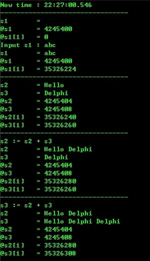
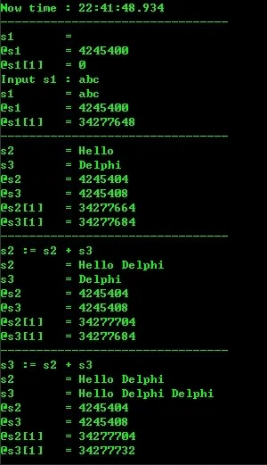
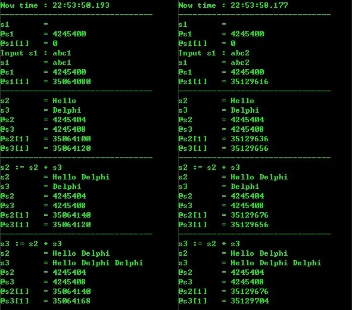
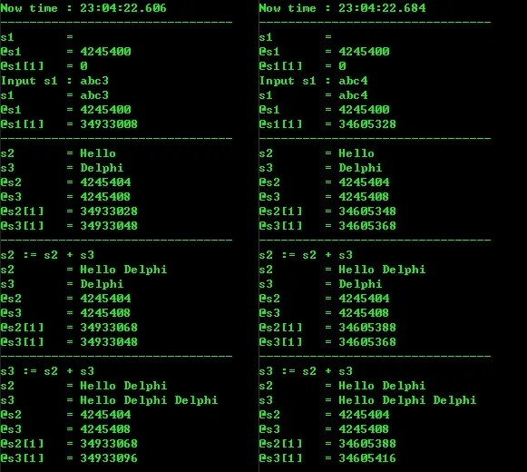

从其它平台迁移而来
探索
之前提到了Delphi的字符串，但并未展开说，这里就详细探讨下Delphi的字符串类型。
废话不多说，直接上源码：
|
|
运行结果如下：

从运行结果可以看出：
-
字符串类型实际是分两部分进行保存的，一部分是字符串变量名（本质是指针），另一部分是字符串内容（本质是字符串数组，且第0个元素存放的是字符串的长度）。
-
字符串在未初始化/未赋值时，字符串内容的地址为0，即系统未对其进行分配内存；但字符串变量名的地址是存在的，可以理解为字符串变量已经完成了占位工作，方便后续工作的展开。
-
字符串在赋值、拼接时，变量名地址不变，内容地址改变，说明后来的字符串内容是在另外一个位置重新生成的新字符串，和原来的字符串没有任何关系。
-
字符串变量名的地址远小于字符内容的地址，说明两者是在完全不同的内存区域。事实上，字符串变量名是在栈区，字符串内容是在堆区。
过一段时间之后再次运行，结果如下：

对比两次运行，可以看出：
- 字符串变量名地址未发生变化，字符串内容地址却完全不同，进一步说明变量名是分配在栈区，内容是分配在堆区。
至于是在程序的栈区和堆区还是在内存的栈区和堆区，暂不可知。因此又先后把该测试程序打开两次，把该测试程序复制一个副本几乎同时打开，运行结果如下图：


由此可以看出：
-
变量名确实是分配在栈区，而内容是分配在堆区。
-
这里的栈区和堆区，极有可能是内存的栈区和堆区，但也不排除是
Delphi专门做过优化的原因。
结论
-
字符串变量名分配在栈区，内容分配在堆区。
-
字符串未初始化/未赋值时，
Delphi只为变量名分配了内存空间，为字符串赋值时才为内容分配内存空间。 -
字符串在进行拼接时，拼接后的字符串是在另一段完全不同的内存空间中，而且是在堆区。由于堆栈性质的不同，堆的执行效率不如栈，因此，当进行大量的字符串拼接时，这将会成为性能瓶颈之一。